Beweging van lucht van hoge naar lage drukgebieden, veroorzaakt door temperatuurverschillen. Natuurfenomeen waar je geen invloed op hebt.
Tegenwind dwingt tot koerswijziging, niet tot verandering van jezelf of je doelen.
Vermogen om invloed uit te oefenen of controle te hebben over situaties (of personen).
Macht stelt je in staat jouw koers te veranderen; bij tegenwind moet je laveren (slim navigeren) om je bestemming te bereiken.
Over jouw zeilsinstructeur Danny
In mijn jeugd leerde ik zeilen op de Loosdrechtse Plassen, het IJsselmeer en de Waddenzee.
Als CWO-gecertificeerd zeilinstructeur (ZI-A) bij (voormalig) Zeilschool de Vier Windstreken
(Loosdrecht) vond
ik een balans tussen serieus leren zeilen volgens alle regeltjes en plezier maken met de wind.
Net als op het water, heb ik in het leven geleerd te
laveren bij tegenwind, altijd mijn eigen koers varend. Nu geef ik deze
levenslessen door.
Je heb geen diploma nodig om in Nederland een zeilboot te huren.
Programma en Kosten
Ik geef bij voorkeur les op de Kagerplassen, omdat ik daar een motorboot heb liggen waar we warme koffie of chocolademelk kunnen drinken.
Ik begin na 10:00 uur met lesgeven, omdat het dan meestal warmer is en de wind is toegenomen. Eind van de dag zal de wind wat afnemen door de dalende temperatuur.
kosten
3 uur les
Hele dag:
Avond lessen Alleen op de Kagerplassen, van 18:00 tot zonsondergang:
Het zeilweer deze week
| Kagerplassen | Uitgeest | Loosdrecht | Buienradar |
|---|---|---|---|
De club van Windkracht 5
Bij deze windkracht is het niet verstandig om met beginners het water op te gaan. Maar voor gevordenden is alles boven windkracht 4 juist een uitdaging.
Bij uitdagende windcondities stuur ik een bericht naar de WindMacht5 app groep; iedereen die mee wil zeilen meldt zich, wie het eerste appt die eerst zeilt. De boot is vol bij instructeur + 2 zeilers